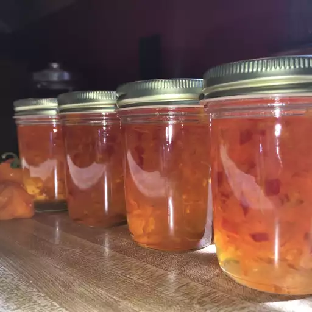

Habanero Pepper Jelly

Description
Blazing hot pepper jelly is addictive if you can handle it! The grated carrot adds nice color and texture. Pepper hotness and people's tolerance varies, so you'll have to experiment to find the right number to add.
Ingredients
- 8 half pint canning jars with lids and rings
- 1 1/2 cups cider vinegar
- 6 1/2 cups white sugar
- 1 cup shredded carrot
- 1/2 cup minced red bell pepper
- 15 habanero peppers, seeded and minced
- 2 (3 ounce) pouches liquid pectin
Steps
- Stir the vinegar and sugar in a saucepan over medium-high heat until the sugar has dissolved, then stir in the carrot and red bell pepper. Bring to a boil, reduce heat to medium, and simmer 5 minutes. Add the habanero peppers and simmer 5 minutes longer. Pour in the pectin, and boil for 1 minute, stirring constantly. Skim and discard any foam from the jelly.
- Sterilize the jars and lids in boiling water for at least 5 minutes. Pour the jelly into the hot, sterilized jars, filling the jars to within 1/4 inch of the top. Wipe the rims of the jars with a moist paper towel to remove any food residue. Top with lids, and screw on rings.
- Place a rack in the bottom of a large stockpot and fill halfway with water. Bring to a boil over high heat, then carefully lower the jars into the pot using a holder. Leave a 2 inch space between the jars. Pour in more boiling water if necessary until the water level is at least 1 inch above the tops of the jars. Bring the water to a full boil, cover the pot, and process for 5 minutes.
- Remove the jars from the stockpot and place onto a cloth-covered or wood surface, several inches apart, until cool. Once cool, press the top of each lid with a finger, ensuring that the seal is tight (lid does not move up or down at all).